Custom URL Creation - Test Report
Feature Information
| Extension | Evoq.PersonaBar.UrlManagement |
|---|
| Feature Name | Custom URL Creation |
|---|
| Feature Priority | Top |
|---|
| Description | Create and manage custom friendly URLs for pages with support for multiple locales and portal aliases |
|---|
| UI Location | Pages > [Select Page] > Advanced > S.E.O. > URLs for this page |
|---|
| Test Date | January 6, 2026 |
|---|
| Tested By | Automated Testing (Claude) |
|---|
Test Results Summary
| Total Tests |
Passed |
Failed |
Pass Rate |
| 7 |
7 |
0 |
100% |
Test Cases
Test 1: Create Valid Custom URL with Standard Path
Status: PASS
Objective: Verify that a custom URL with a standard path can be created successfully.
Steps:
- Navigate to Pages > Home > Advanced > S.E.O.
- Click "Add URL" button
- Enter URL Path: /my-custom-url-test
- Select URL Type: Active (200)
- Click Save
Expected Result: URL is created and appears in the URLs list.
Actual Result: URL "/my-custom-url-test" was successfully created and displayed in the list with "Active (200)" status and "SuperUser Account" as the creator.
Screenshots:
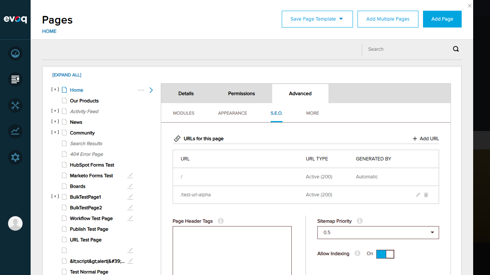

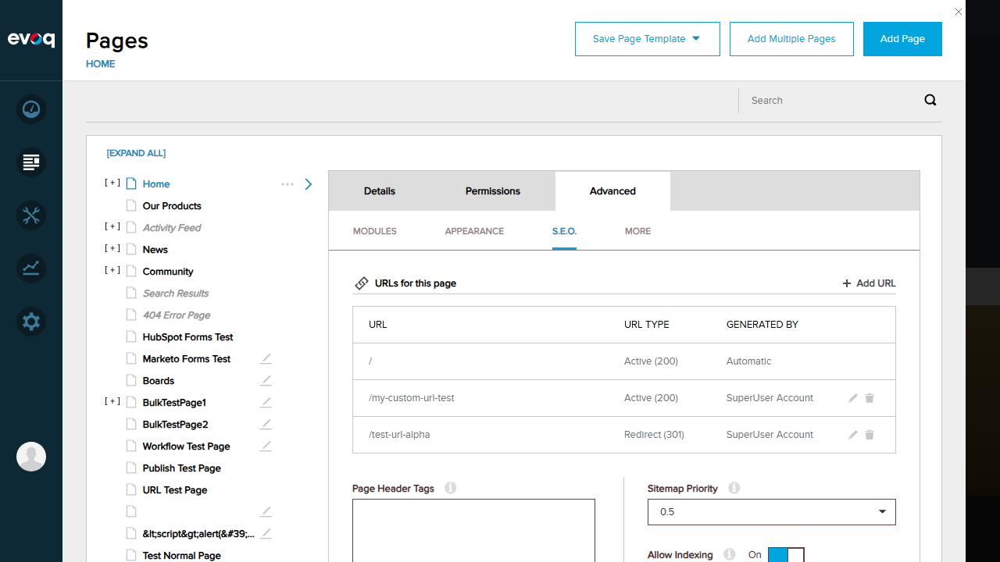
Test 2: Create URL with Special Characters
Status: PASS
Objective: Verify URL path cleaning and normalization for special characters.
Steps:
- Click "Add URL" button
- Enter URL Path: /test url with spaces & special!
- Click Save
Expected Result: URL should be cleaned/normalized (spaces converted to hyphens, special characters removed).
Actual Result: The system displayed a message: "The URL has been modified to remove or convert special characters." The URL was automatically cleaned to "/test-url-with-spaces-special" (spaces replaced with hyphens, ampersand and exclamation mark removed).
Screenshots:
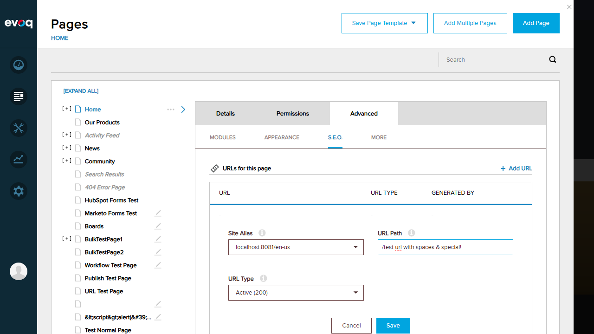
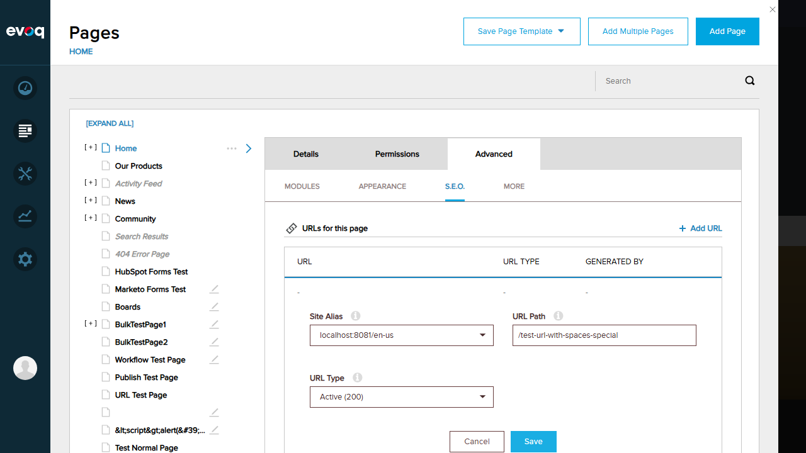
Test 3: Duplicate URL Error Handling
Status: PASS
Objective: Verify that attempting to create a duplicate URL shows an appropriate error and suggests an alternative.
Steps:
- Click "Add URL" button
- Enter URL Path: /my-custom-url-test (already exists)
- Click Save
Expected Result: System should show error and suggest alternative URL.
Actual Result: Error notification appeared: "The submitted URL is not available. If you wish to accept the suggested alternative, please click Save." The URL path was automatically changed to "/my-custom-url-test1" as the suggested alternative.
Screenshots:
Test 4: Create URL with Redirect (301) Status Code
Status: PASS
Objective: Verify that a URL with Redirect (301) status can be created.
Steps:
- Click "Add URL" button
- Enter URL Path: /redirect-url-test
- Change URL Type to: Redirect (301)
- Click Save
Expected Result: URL is created with Redirect (301) status.
Actual Result: URL "/redirect-url-test" was successfully created with "Redirect (301)" status. The Query String field appeared when Redirect type was selected (for specifying redirect parameters).
Screenshots:
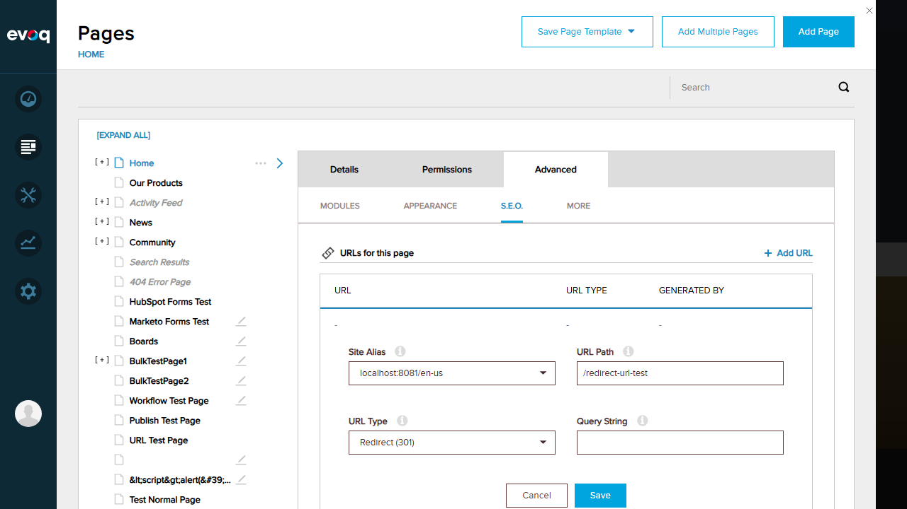
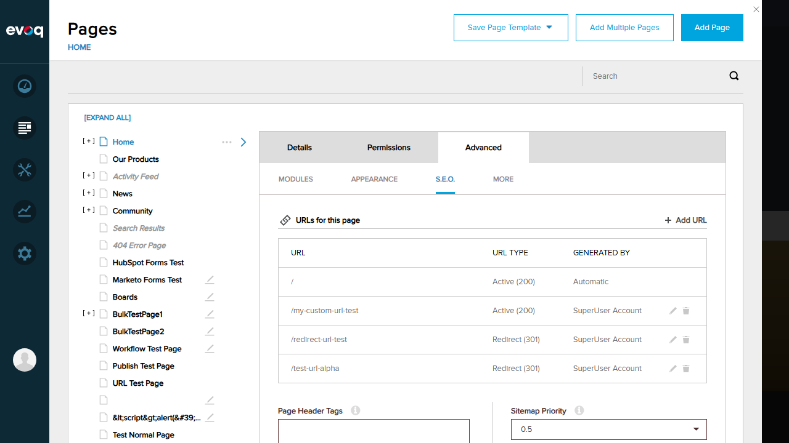
Test 5: Delete Custom URL
Status: PASS
Objective: Verify that a custom URL can be deleted.
Steps:
- Locate the URL "/my-custom-url-test" in the list
- Click the trash/delete icon
- Confirm deletion in the dialog
Expected Result: URL should be removed from the list.
Actual Result: Confirmation dialog appeared: "Are you sure you want to remove this URL?" After clicking "Delete", the URL "/my-custom-url-test" was successfully removed from the list.
Screenshots:
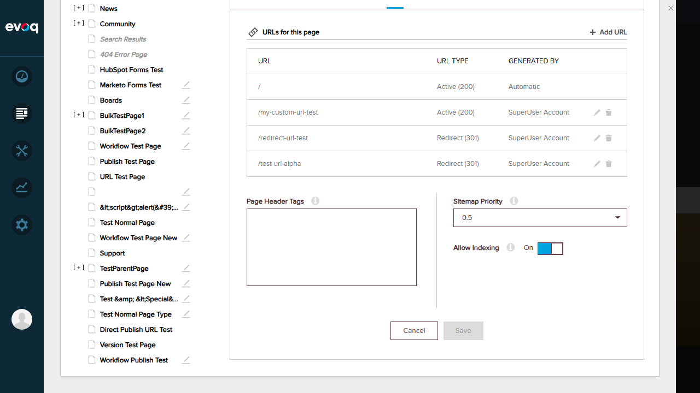
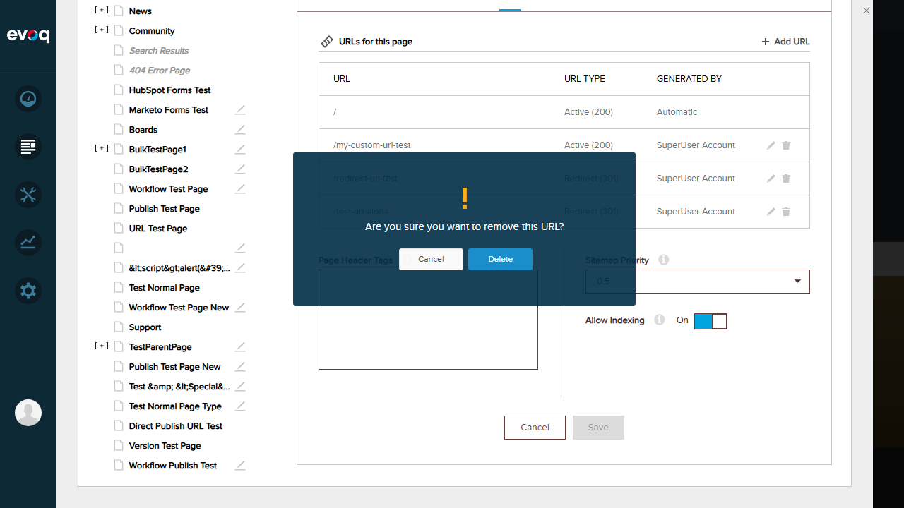
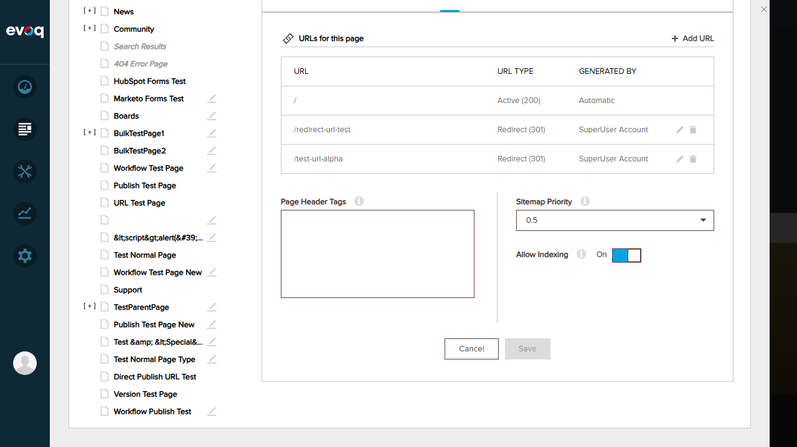
Test 6: Edit Existing Custom URL
Status: PASS
Objective: Verify that an existing custom URL can be edited.
Steps:
- Locate the URL "/redirect-url-test" in the list
- Click the pencil/edit icon
- Change URL Path to: /redirect-url-edited
- Click Save
Expected Result: URL should be updated with new path.
Actual Result: The edit form opened with all current URL settings pre-populated. After changing the URL path from "/redirect-url-test" to "/redirect-url-edited" and saving, the URL was successfully updated in the list.
Screenshots:
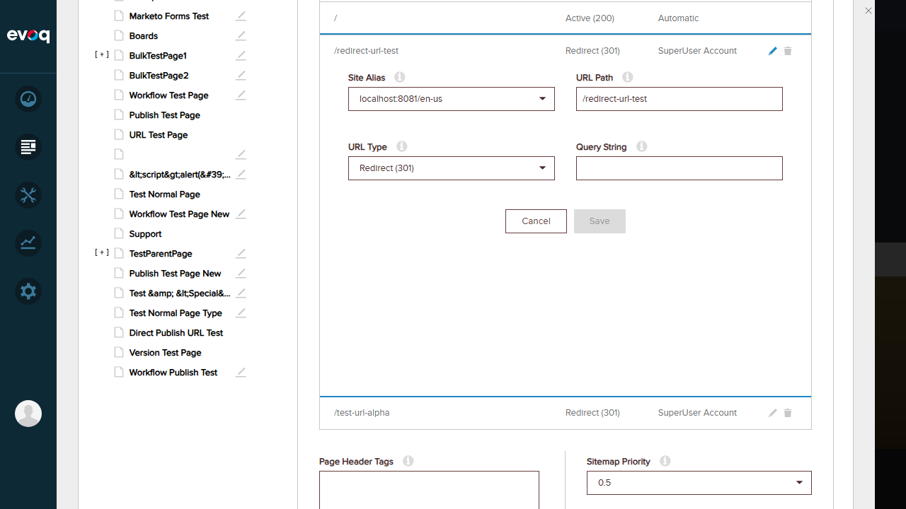
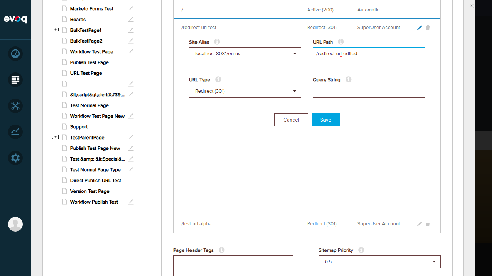
Test 7: Empty/Root URL Path Validation
Status: PASS
Objective: Verify validation when attempting to create a URL with just "/" (root path).
Steps:
- Click "Add URL" button
- Clear URL Path to just "/"
- Click Save
Expected Result: System should show validation error since "/" already exists.
Actual Result: Since "/" already exists as the automatic URL, the system displayed the duplicate URL error: "The submitted URL is not available. If you wish to accept the suggested alternative, please click Save." The URL path was automatically changed to "/1" as the suggested alternative.
Screenshots:
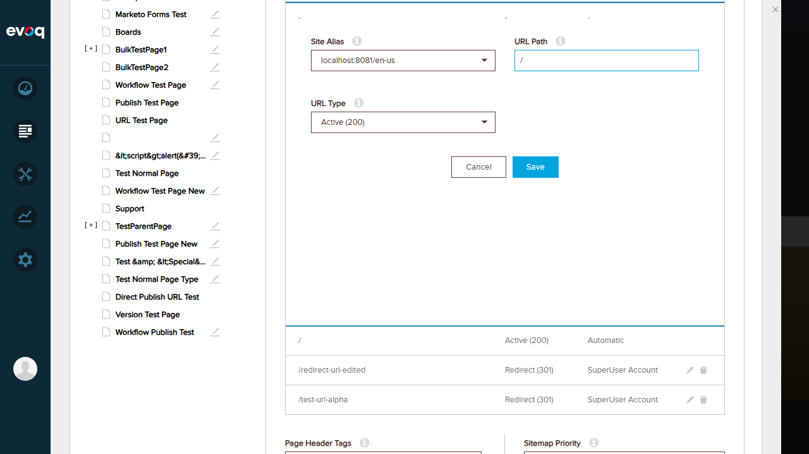
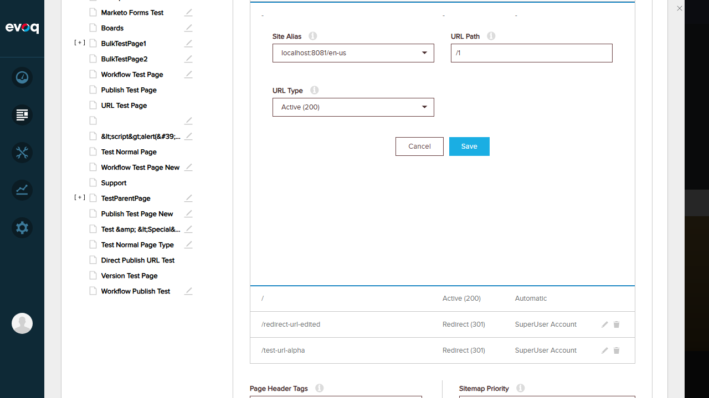
Observations
Notes and Additional Findings
- URL Location: The URL Management feature is located at the page level (Pages > [Page] > Advanced > S.E.O.) rather than in the global Settings menu. This is per-page URL management.
- URL Cleaning: The system uses FriendlyUrlController.CleanNameForUrl() to automatically clean URLs - spaces are converted to hyphens, and special characters are removed.
- Icon Order: In the URL list action column, the first icon is the delete (trash) icon and the second is the edit (pencil) icon.
- URL Types: Two URL types are available: Active (200) for normal URLs and Redirect (301) for redirect URLs.
- Query String: The Query String field appears only when Redirect (301) type is selected, allowing specification of redirect parameters.
- Site Alias Support: The feature supports multiple site aliases (localhost:8081/en-us, etc.) for localized URLs.
- Automatic URLs: The root URL "/" is automatically generated and cannot be deleted (no action icons displayed).
- Code Reference: The URL management logic is implemented in UrlManagementServiceController.cs with CreateCustomUrl(), DeleteCustomUrl(), and UpdateCustomUrl() methods.
Test Environment
| Website URL | http://localhost:8081 |
|---|
| Browser | Chromium (Playwright) |
|---|
| Screen Resolution | 1280x720 |
|---|
| User Account | SuperUser (host) |
|---|
| Test Page | Home Page |
|---|